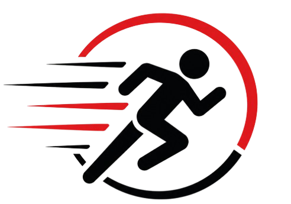
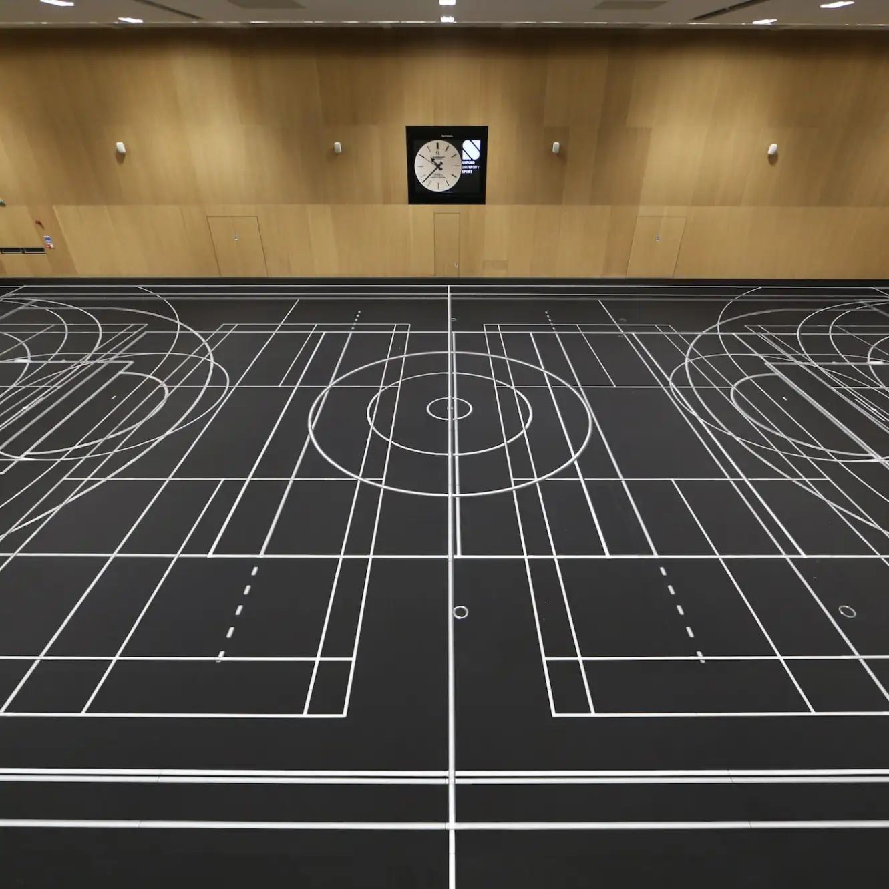
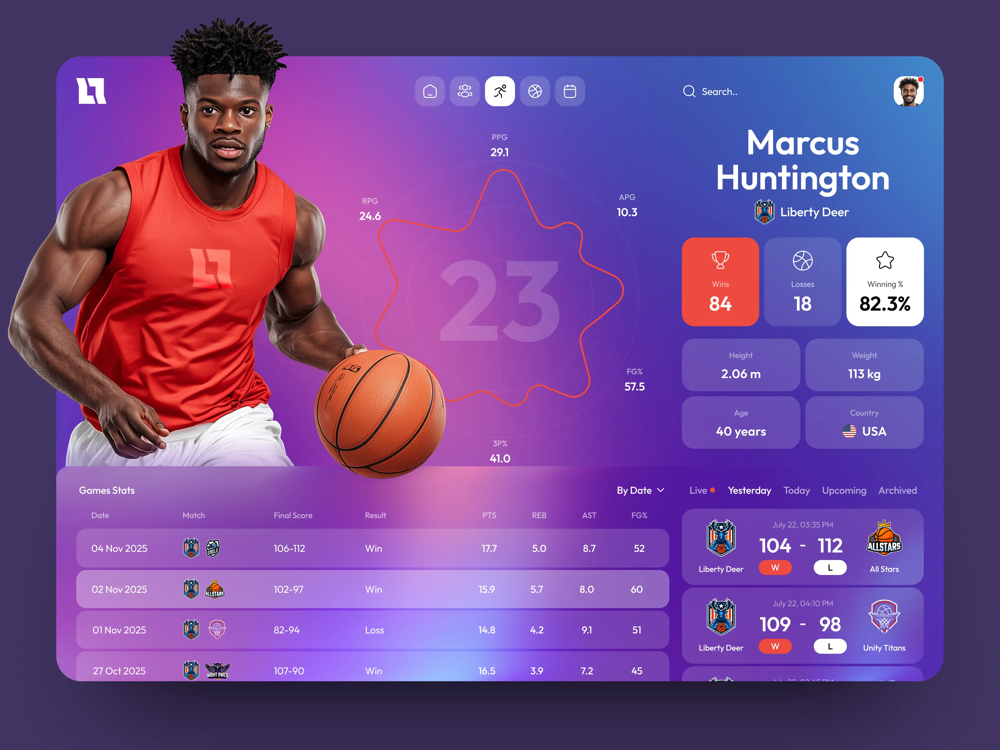

Tecno
Sports


Los dispositivos wearables deportivos actuales integran inteligencia artificial, métricas avanzadas de recuperación y datos biométricos detallados como la serie Garmin Forerunner y el Galaxy Ring, ayudando a los atletas a optimizar su entrenamiento.
Las canchas LED dinámicas son superficies deportivas que utilizan paneles LED integrados en el suelo para mostrar líneas de juego, animaciones, estadísticas y otros elementos visuales. Las marcas pueden modificarse digitalmente, permitiendo adaptar la cancha para diferentes deportes. Esta tecnología ya se ha utilizado oficialmente en competiciones de baloncesto, pero todavía no es común y está siendo adoptada gradualmente en eventos deportivos.

La Airless Gen1 es un balón de baloncesto desarrollado por Wilson después de seis años de investigación y desarrollo. Su estructura interna impresa en 3D permite que el balón mantenga su forma y rendimiento sin necesidad de aire. El proyecto fue desarrollado y probado en los laboratorios W Labs utilizando software avanzado de ingeniería. Aunque está disponible comercialmente, la Airless Gen1 no se utiliza oficialmente en partidos de la NBA ni en competiciones profesionales.

CBB Radar es una plataforma para analizar y monitorear a jugadores brasileños de baloncesto. El sistema reúne información de diferentes fuentes y permite consultar datos de rendimiento, como eficiencia, volumen de juego, perfil de lanzamientos y actuación defensiva. La plataforma está orientada principalmente al análisis y seguimiento de atletas y no es una tecnología utilizada oficialmente para controlar o arbitrar los partidos.



 PT
PT
 EN
EN
 ES
ES